2 Introduction
Cartography - the science of map-making - has been an essential tool for human exploration and understanding for millennia. From ancient Babylonian clay tablets to Ptolemy’s “Geography” to Polynesian Stick Charts (and so many others), we’ve always grappled with the challenge of representing our world. As the years drew on, we developed various map projections to represent the curved Earth on a flat surface, although each projection had its own strengths and distortions, which reflect the historical context of the times. With time, navigation became ever more crucial for trade, empire-building and war, and cartography evolved as well, reflecting advancements in mathematics, astronomy, and geodesy.
In our modern globalized world, cartography has taken on new dimensions of importance. Digital mapping technologies, powered by satellite imagery and GPS, have revolutionized how we navigate and understand our planet. Cartography is all around us: from the ubiquitous smartphone maps guiding our daily commutes, to the sophisticated GIS systems informing urban planning and climate science. As we continue to explore our home planet, the solar system, and beyond, mathematical cartography will remain an indispensable tool, helping us to visualize and understand new worlds.
But let’s return to the Earth for the time being. Representing spatial information accurately on the surface of the Earth requires a good mathematical model. In this blog post, let’s examine some basics of modelling the Earth surface, as well as the problem of mapping information from the curved Earth surface to a flat map at a high level.
3 Spherical and Ellipsoidal Earth
The simplest mathematical model of the Earth is a sphere. The widely known latitude and longitude furnish standard angular coordinates for the surface, which can be expressed parametrically using the usual expression in Cartesian coordinates 1:
\[ \begin{align} x &= R\cos\phi\cos\theta \\ y &= R\sin\phi\cos\theta \\ z &= R\sin\theta \end{align} \]
While the spherical model is remarkably good, modern applications require a more accurate representation. The most important effect to take into account is the (very slight) bulging out of the surface close to the equator, caused by Earth’s rotation. An approptriate model for this is a ellipsoid of revolution (aka a prolate spheroid) which is created by rotating an ellipse around its semiminor axis (which we take to be the \(z\) axis). Since we have azimuthal symmetry, it’s easier to examine the properties and parametrization of the spheroid by considering an arbitrary cross-section. Without loss of generality, we work in the \(x-z\) plane.
In Cartesian coordinates, the ellipse is given by
\[ \frac{x^2}{a^2}+\frac{z^2}{b^2} = 1 \]
The following table summarizes some popular parameterizations. For construction/derivation see Section 5.1
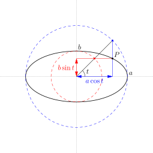
\[ \begin{align} x &= a\cos t \\ z &= b\sin t \end{align} \]
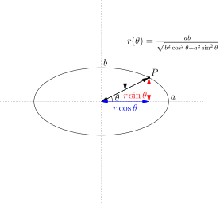
\[ \begin{align} x &= r(\theta)\cos \theta \\ z &= r(\theta)\sin \theta \end{align} \]
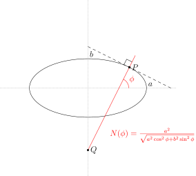
\[ \begin{align} x &= N(\phi)\cos\phi \\ z &= \frac{b^{2}}{a^2}N(\phi)\sin\phi \end{align} \]
To parametrize the ellipsoid, we just need to rotate the ellipse around the \(z\) axis and pay attention to limits of the angles. Defining the usual azimuthal angle by \(\lambda\) for the geodetic parametrization we get
\[ (x,y,z) = (N(\phi)\cos\phi\cos\lambda,N(\phi)\cos\phi\sin\lambda,\frac{b^2}{a^2}N(\phi)\sin\phi) \]
with \(\lambda \in (0,2\pi)\) and \(\phi \in (-\pi/2,\pi/2)\).
An important parameter while frequently encountered in descriping ellipsoid is the flattening which is equal to
\[ f = 1-\frac{b}{a} \]
It describes the degree of “squashing” of the spheroid - the deviation of being a perfect sphere. Remarkably, for the Earth this flattening is extremely small (\(\sim 1/298.26\)) 2, corrsesponding to a difference of just \(\sim 21\) km between the polar and equatorial axes.
3.1 Building Geographic Coordinate Systems (GCS): geoid, datum and friends
3.1.1 The geoid
The actual shape of the Earth is extremely complex and can only be determined via measurement. Indeed the complicated surface topology of the land masses is very difficult to model mathematically. Instead, one can define some reference surfaces.
A particularly important surface is the geoid which is defined as the shape the Earth’s oceans would take under the influence of gravity and centrifugal forces, if we turned off all other interactions like tides and currents. In such a case, the surface of the oceans would be an equipotential surface of the potential (expressed in the co-rotating frame)(Barthelm 2013):
\[ W = W_{a}+\Phi_{c}\]
where \(W_{a}(\vec{r})\equiv G\int_{v}\frac{\rho(\vec{r'})}{|\vec{r}-\vec{r'}|}dV\) is the Newtonian gravitational potential and \(\Phi_{c}\equiv \frac{1}{2}\Omega^{2}d_{z}^{2}\) is the centrifugal potential. That is, the geoid is defined as a particular \(W = \rm{const}\) surface.
It should be noted that the geoid is a very complicated surface as the potential \(W\) depends on the non-uniform mass density distribution inside the Earth. The measurement of the Earth’s potential has been carried out by multiple satellite missions and variations have now been mapped to scales of about 10 km. Below is an example of geoid modulations from the XGM2019e model(Zingerle et al. 2020) (the modulations have been exaggerated be a factor of 10000):
{kind=link}
3.1.2 The geodetic datum
Given a model of the geoid, a natual question arises of how to align a spheroidal model of the Earth to “best” represent it. One obvious choice is to align the ellipsoid so that it approximates the shape of the geoid in the least-squares sense for the entire globe, forming a so called geocentric datum. We then map the Earth’s surface features onto the aligned ellipsoid. A very widely used example of this is the WGS84 datum, which is the standard datum used in most GPS systems. Another possibility is to try to approximate the geoid as well as possible in particular region. Such datums are known as local datums. For example, the NAD83 (North American Datum 83) datum is particularly well suited for representing the US but is less well suited for Europe. Since a datum is a reference surface that determines the geographic coordinate system, it is important to always keep in mind which datum is being used, especially when combining data from different sources.
4 Maps: from Earth to paper
4.1 Background
One of the most famous results in classical differential geometry due to Carl Friedrich Gauss is the Theorema Egregium (remarkable theorem) which states that Gaussian curvature of a given surface (a certain measure of curvature) can be determined by measurements intrinsic to the surface, without any reference to how it is embedded in ambient space. The connection the mapping problem is the following: a sphere (or an ellipsoid) has non-zero Gaussian curvature while a piece of paper has vanishing Gaussian curvature. Thus it follows that a piece of paper cannot be folded into a sphere or conversely that a surface of a sphere cannot be unfolded onto a flat piece of paper without distortion. We therefore should expect that there is no way to construct a flat map that reproduces the information on the surface of the Earth without some distortion.
One approach that is very frequently presented when developing projections is by the use of the so-called developable surfaces. For our purposes here, a developable surface is simply a surface that has zero Gaussian curvature and thus can be unrolled into a flat plane without bending (i.e. without distortions). In 3D, there are only a few such surfaces which are of use: cylinders, cones and (trivially) planes. The idea is then to project the surface of the Earth onto the developable surface and then to unroll that surface into a flat map.
Based on the type of developable surface one can classify many projections3:
| Normal | Transverse | Oblique | |
|---|---|---|---|
| Azimuthal | 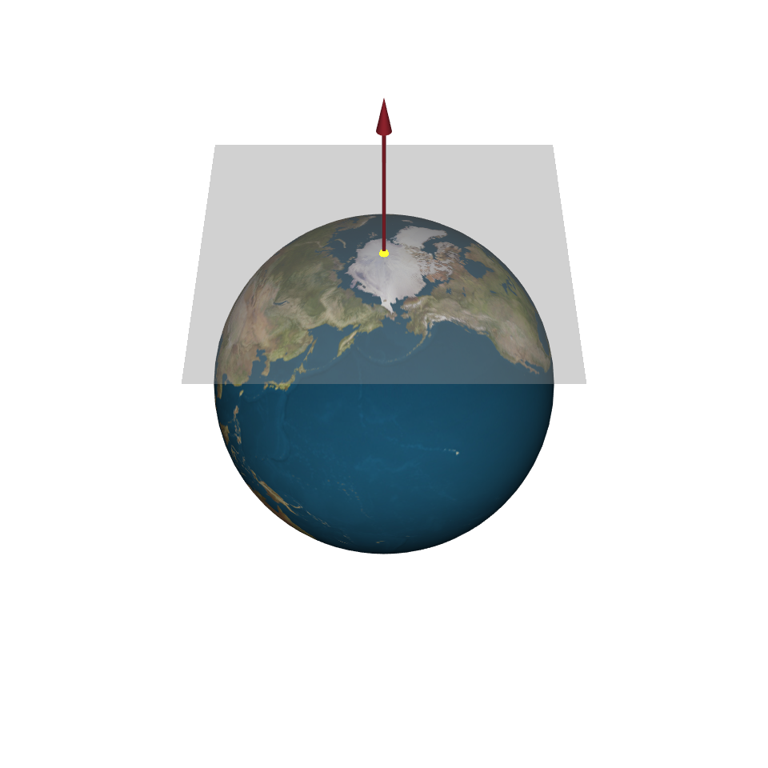 | 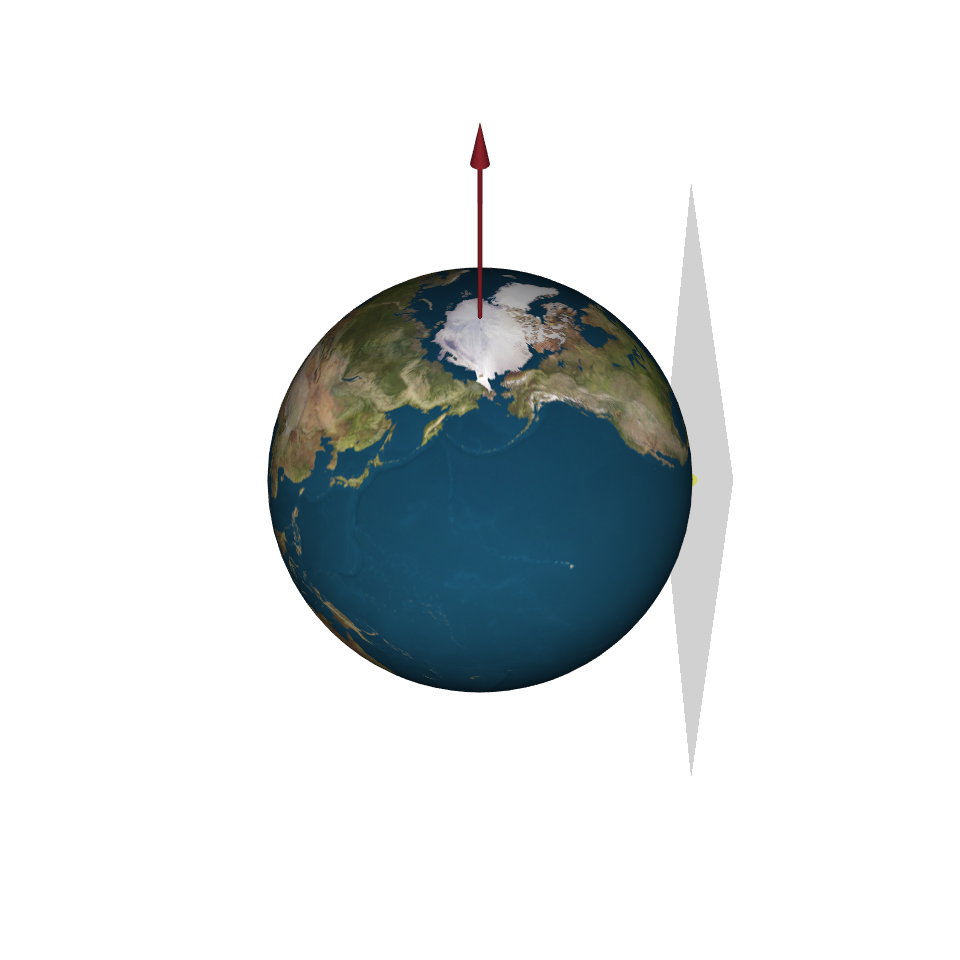 | 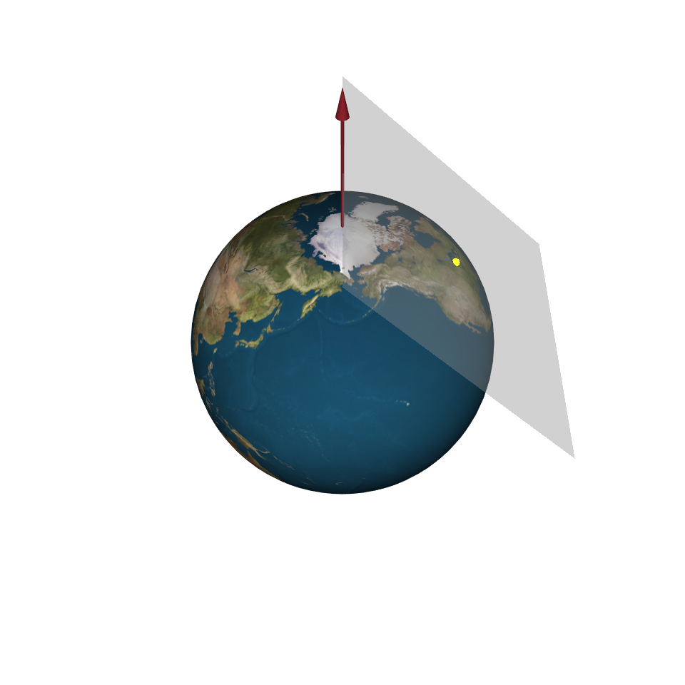 |
| Cylindrical | 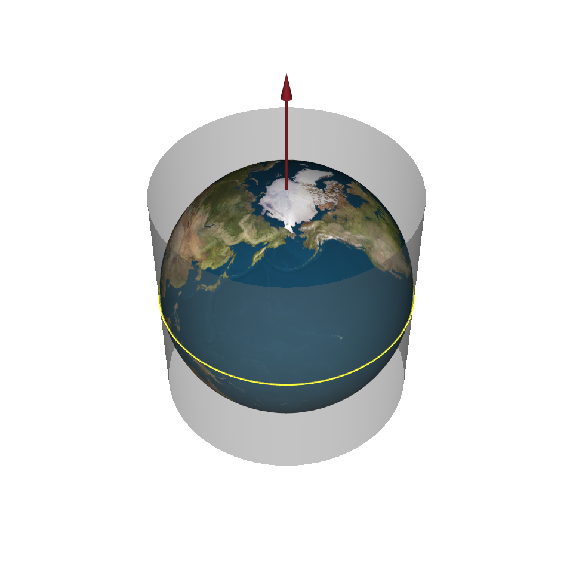 | 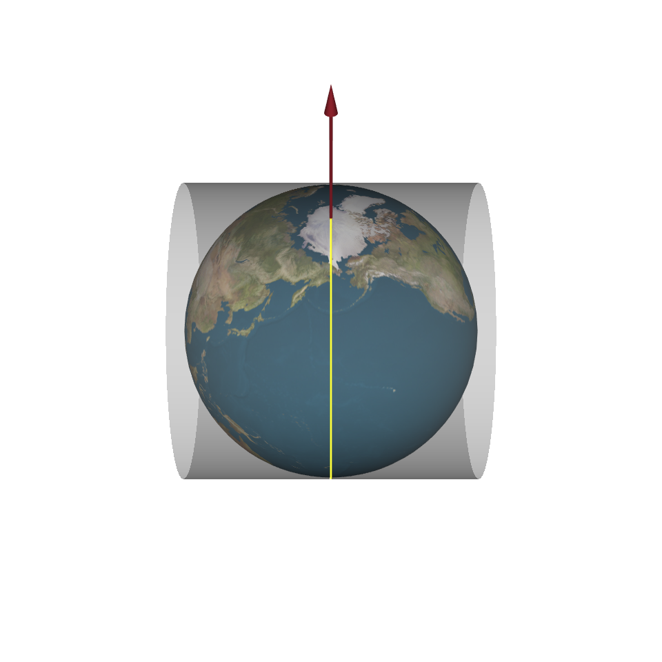 | 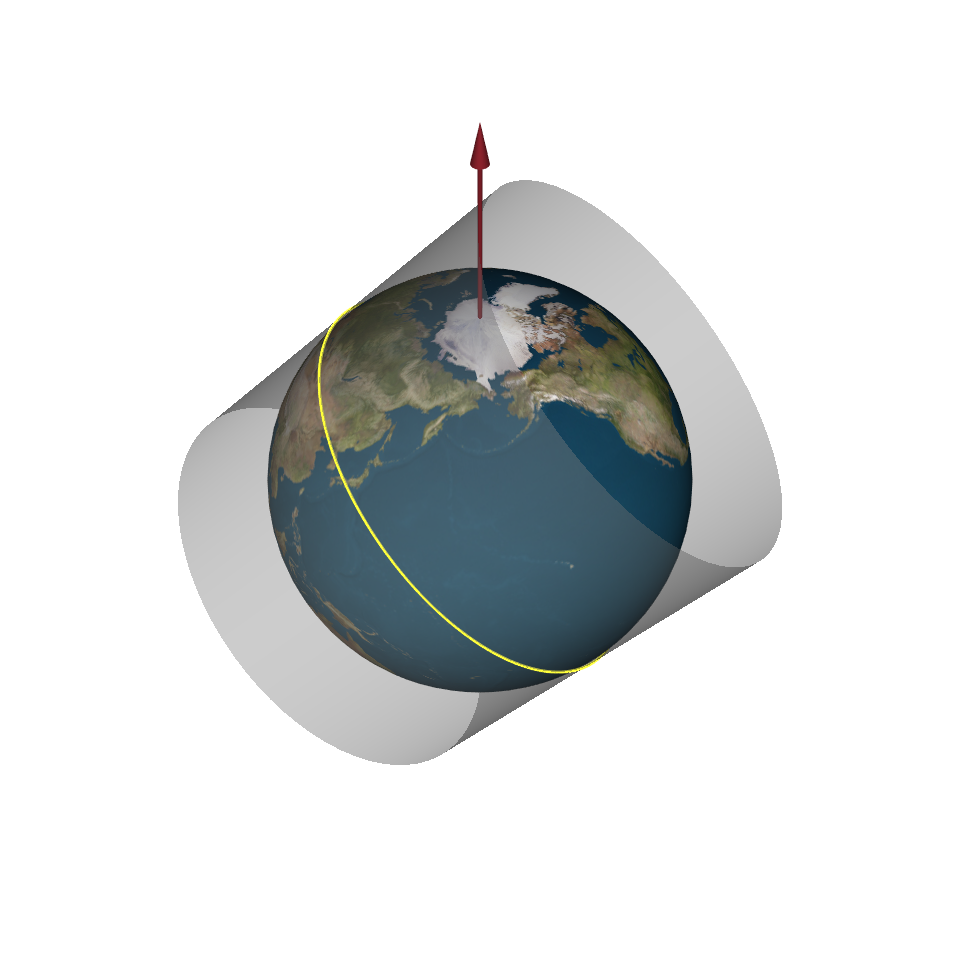 |
| Conical | 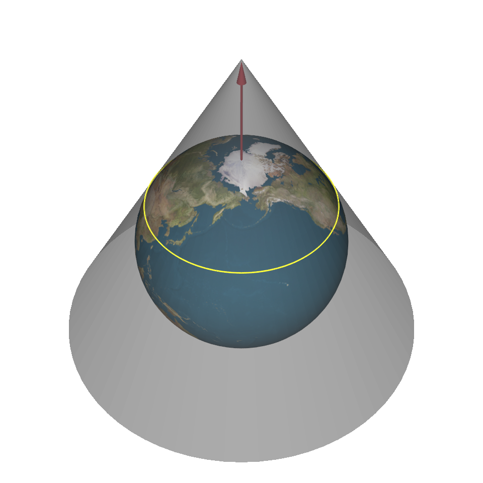 | 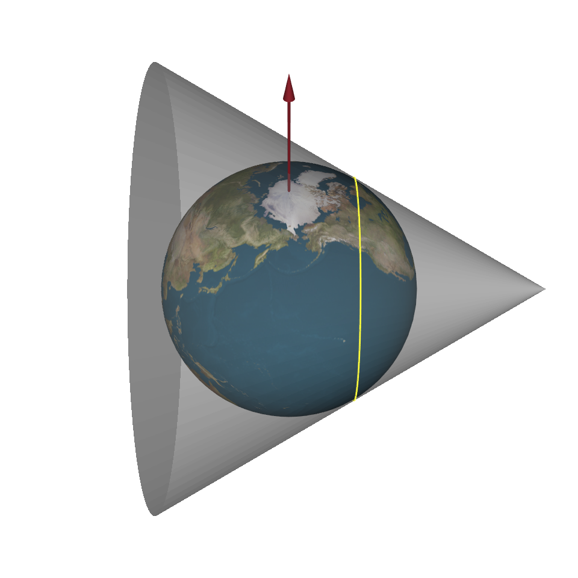 | 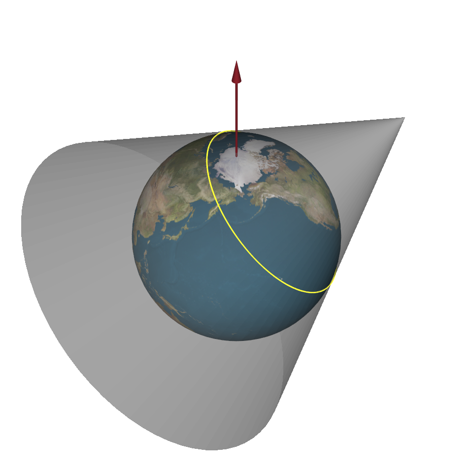 |
In the above we only considered the cases where the developable surfaces touch the sphere. One can also consider secant variations where the developable surfaces intersect the sphere in multiple locations. This is demonstrated for the case of the conical map in the following video:
Note that there are many modern projections which cannnot be classified in any of the above categories. For this and other reasons some authors have criticised this classical classification scheme(Lapaine and Frančula 2022). Indeed, modern projections do not need developable surfaces to be defined and are derived by considering desirable properties of the mapping.
4.1.1 To be continued
In the next post we will present a modern way of classifying and deriving projections, based on the notion of certain desirable properties (such as preserving angles) and derive a couple of famous projections from scrach. Stay tuned!
5 Appendix
5.1 Ellipse parametrizations
5.1.1 Standard (aka de la Hire)
A simple parametrization in terms of angles is given by \((a\cos t,a\sin t)\). Note, however, that here \(t\) is not the angle between the semi-major axis and the point on the spheroid (see figure below). Indeed, the construction is done as follows:
- Draw 2 circles centered at (0,0) with radii \(a\) and \(b\)
- Given any point \(P\) on the ellipse draw a vertical line from \(P\) until it intersects the larger circle with radius \(a\) and a horizontal line that intersects with circle of radius \(b\). Note that there is a unique line from the origin that passes through both interesection points.
- The angle between the semi-major axis and this line is denoted \(t\). From trigonometric considerations it follows immediately that the Cartesian coordinates of \(P\) are indeed \((a\cos t,a\sin t)\)
5.1.2 Polar
Another simple parametrization is the polar one, given by \((r(\theta)\cos\theta,r(\theta)\sin\theta)\). To find \(r(\theta)\), note that the point must lie on the ellipse and thus:
\[ \frac{r^2\cos^2\theta}{a^2} + \frac{r^2\sin^2\theta}{b^2} = 1 \] From which it follows that
\[ r(\theta) = \frac{ab}{\sqrt{b^2\cos^2\theta+a^2\sin^2\theta}} \]
5.1.3 Geodetic
Finally, for GIS applications a particularly important parametrization is one involving the so-called geodetic lattitude (\(\phi\)) which is the angle between the semi-major axis and the normal to the ellipse. Note that unlike the case of a circle, the normal does not generally pass through the center of the ellipse. To derive this parametrization we will proceed as follows. Consider the normal to the ellipse at some point \(P=(x_0,z_0)\). Let \(f(x,z)=\frac{x^2}{a^2}+\frac{z^2}{b^2}\). Then the ellipse is the level set of \(f\), given by \(f(x,z)=1\). A well known result is that the gradient of the function is normal to the level sets 4. Thus \(\nabla f\) is a vector in the direction of the normal. We have
\[ \nabla f = (f_x,f_z) = \left(\frac{2x}{a^2},\frac{2z}{b^2}\right) \]
From trigonometry we have that
\[ \tan\phi = \frac{f_z}{f_x}\rvert_{(x_0,z_0)} = \frac{a^2}{b^2}\frac{z_0}{x_0} \]
which implies that \(z_0^2 = \frac{b^4}{a^4}x_0^2\tan^2\phi\). Since \(P\) lies on the ellipse we also have that
\[ b^2 x_0^2 + a^2 z_0^2 = a^2 b^2\]
Substituting we get that
\[ x_0^{2} = \frac{a^{4}}{a^2+b^2\tan\phi} = \frac{a^4\cos^2\phi}{a^2\cos^2\phi+b^2\sin^2\phi} \]
which means
\[ x_0 = \frac{a^2}{\sqrt{a^2\cos^2\phi+b^2\sin^2\phi}}\cos\phi := N(\phi)\cos\phi \]
(Note that we took the positive root since we want \(x\geq 0\) for \(\phi\in[0,\pi/2]\) )
Substituting this result back and solving for \(z_0\) we get
\[ z_0 = \frac{b^2}{a^2}N(\phi)\sin\phi\]
Thus we finally have that the parametrization of the ellipse is given by
\[ \left(N(\phi)\cos\phi,\frac{b^2}{a^2}N(\phi)\sin\phi\right) \]
One can easily check that:
- The coordinates do indeed describe an ellipse
- One gets the expected coordinates for \(\phi=0\) and \(\phi=\pi/2\).
The 2D figures in Section 3 were created using Asymptote Vector Graphics Language. The code can be found here
References
Footnotes
In principle this is not quite correct - there is no single coordinate chart that can cover the whole sphere. Indeed the polar coordinates do not cover the poles (the intervals for the angles must be open). See e.g. Example 4.1.4 in (Lee 2003).↩︎
The data can be found in many sources, e.g. In Table 1.1. of this report↩︎